Комикс как феномен массовой культуры ныне знаком почти каждому, пусть даже поверхностно. В основном комикс ассоциируется с Америкой и супергероями, Европой и графическими романами, Японией и мангой. В нашу страну истории в картинках стали массово проникать лишь в лихие девяностые. Но действительно ли комикс пришёл к нам недавно? Настала пора вернуться в прошлое и вспомнить о том, как обстояли дела с комиксами в эпоху Советского Союза.
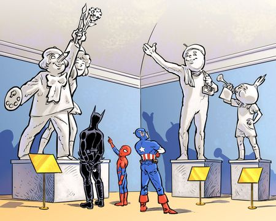
Основы развития комиксов в СССР были заложены ещё в период Гражданской войны. Вожди революции понимали, что безграмотный народ лучше проникнется идеями, которые будут поданы через яркие картинки. Поэтому и появились «Окна РОСТА» — серия агитационных плакатов, состоящих из одного или нескольких графических изображений, где была показана разница жизни при буржуях и при диктатуре пролетариата. К плакатам прилагались надписи, нередко в стихотворной форме, комментирующие действие на картинках. Это было начальным шагом в развитии отечественной рисованной истории, в которой работали такие известные личности, как поэт Владимир Маяковский, художники Д. Моор (многим знаком его плакат «Ты записался добровольцем?»), Иван Малютин и многие другие.
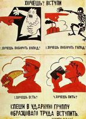
Сразу видно, что такое хорошо, и что такое плохо.
Первое «Окно РОСТА» появилось в октябре 1919 года, за авторством художника Михаила Михайловича Черемных. Именно тогда родились запоминающиеся образы-архетипы красноармейца, рабочего, крестьянина, буржуя, разгильдяя, которые на годы вперёд определили развитие этого вида искусства в СССР. В плакатах всё держалось на контрастах цветов, например красного и чёрного, на простоте рисунка в виде рубленых схематичных фигур, на запоминающихся лозунгах-речёвках.
После Гражданской войны настал новый этап советского комикса. В процессе развития советской детской литературы появлялись многочисленные периодические издания, где обязательно находилось место историям в рисунках. На страницах детских журналов «ЕЖ» («Ежемесячный журнал») и «ЧИЖ» («Чрезвычайно интересный журнал») нередко появлялись комиксы.
В отличие от эпохи революции, когда в рисунках использовался контраст лишь двух цветов (красный и чёрный, красный и белый), картинки в детских журналах часто были просто чёрно-белыми, причём прорисовка их находилась на более высоком уровне.
С 1924 года начал издаваться детский журнал «Мурзилка», который не раз обращался к формату комикса, чтобы рассказать юной аудитории об актуальных событиях. Сатирические журналы для взрослых («Крокодил», «Смехач» и прочие) использовали похожие «комиксы» для агитации и борьбы с алкоголиками, тунеядцами, хулиганами, высмеивая и клеймя их на своих страницах.
Самым популярным зарубежным комиксистом в СССР стал датчанин Херлуф Бидструп, — несколько вышедших у нас сборников его рисунков были нарасхват. Каждый скетч Бидструпа имел чёткий сюжет с завязкой, развитием и ударным финалом. Его мини-комиксы посвящены сатире на современные ему нравы либо события. Особенно едко художник высмеивал мещанство и узколобость обывателей.
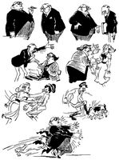 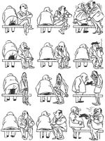
Рисунки Бидструпа понятны без слов.
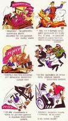
Вся история революции на одной странице.
Великая Отечественная война внесла коррективы в процесс развития советского комикса — он вновь становится явно политизированным, только теперь мишенью для художников были фашистские лидеры и солдаты немецкой армии. Военные плакаты назывались «Окнами ТАСС», они появились на улицах Москвы уже 27 июня 1941 года. Зачинателем движения были художники Павел Соколов-Скаля и Николай Денисовский. За время существования «Окон ТАСС» было выпущено около 1500 плакатов. Изображения печатались вручную, в несколько красок с помощью трафаретов. Мастерские, подобные «Окнам ТАСС», возникали в разных городах Советского Союза, в воинских частях, на заводах.
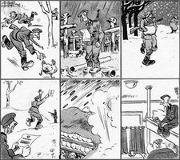
Комикс из сборника Бориса Ефимова «Гитлер и его свора».
Законодателями мод были Борис Ефимов и коллектив художников, работавших под псевдонимом Кукрыниксы (Михаил Васильевич Куприянов, Порфирий Никитич Крылов и Николай Александрович Соколов). Помимо всемирно известных одиночных рисунков-карикатур, на страницах газет и в отдельных изданиях появлялись настоящие комиксы — серии рисунков со связанным сюжетом. Обычно это были истории о немцах, которые хотели поработить советский народ, но получили отпор. Художники работали так, чтобы даже без подписей и реплик нарисованная история становилось понятной самому неискушённому читателю.
Часть тиража «Окон ТАСС» отправлялась за рубеж, где экспонировалась на выставках, воспроизводилась в крупнейших газетах и журналах. Также «Окна» выходили сериями в виде диафильмов по 40-50 плакатов на каждой ленте и демонстрировались на лекциях в школах, в парках культуры и клубах, отсылались на фронт. Иногда ленты переправлялись партизанам в немецкий тыл. Плакаты «Окон ТАСС» в комиксовом стиле рисовали Николай Радлов, Георгий Савицкий и другие.
В послевоенные годы тематика советских комиксов постепенно меняется — трансформируется их формат и частично идейное наполнение. Да и противники сменились — главной мишенью стали недавние военные союзники, прежде всего американцы. Продолжали свою работу отечественные художники, начинавшие в военную и довоенную эпоху. Выходили отдельные объёмные фолианты с рисунками-комиксами Ефимова и Кукрыниксов, предназначенные для взрослой аудитории.
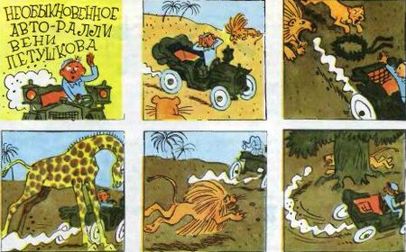
Африканское дерби Вени Петушкова.
А вот молодое поколение тех лет получало свою долю историй в картинках в основном на страницах популярного журнала «Юный техник». Журнал был рассчитан на самый широкий круг читателей, которые интересуются техникой и домашним изобретательством. Специфика издания диктовала и тематику комиксов — познавательные сюжеты, рассказывающие и показывающие, как изготовить ту или иную поделку.
Комиксы «Юного техника» появлялись на страницах журнала нерегулярно. Обычно комиксы занимали лишь часть журнальной полосы и располагались внизу под материалом какой-нибудь статьи. Рисунки шли друг за другом, как кадры на плёнке. Истории в картинках, рассказанные таким образом, могли растянуться на весь журнал.
Среди самых известных детских историй тех лет — комиксы о приключениях мальчика Пети Рыжика и его верных друзей, щенков Мика и Мука. Благодаря пытливости и настойчивости герои попадали в самые необычные ситуации, путешествовали по различным континентам, изучали географию, находили верных друзей, помогали угнетённым победить врагов — солдат-карателей, злобных бандитов, хитрых богачей. Иной раз судьба забрасывала путешественников в космос, и здесь они проявляли свои лучшие качества, помогали инопланетянам, и в ответ сами получали помощь. Позднее печатались и отдельные издания приключений Пети.
В 70-е окольными путями в СССР проникли и западные комиксы. Их не печатали в массовых изданиях, не выпускали отдельными сборниками, они привозились из-за границы в нескольких экземплярах моряками или дипломатами, продавались только на «чёрном рынке» и стоили дорого. На фоне пресноватых отечественных комиксов Супермены и Человеки-пауки смотрелись брутально, необычно, агрессивно — а значит, притягательно.
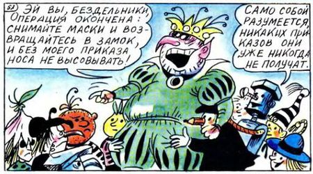
Встреча весёлых человечков со своими «злыми» аналогами.
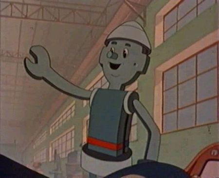
Один из любимых героев — Самоделкин.
На рынке советских комиксов лидерами были журналы для самых маленьких — «Весёлые картинки» и «Мурзилка», чей пик славы пришёлся на переломные 80-е годы. Впрочем, и ранее журналы имели устойчивый спрос у юных читателей.
В «Весёлых картинках» главными героями выступала группа Весёлых человечков — интернациональная команда персонажей сказок разных стран: Буратино, Дюймовочка, Карандаш, Петрушка, Самоделкин и другие. Вместе друзья путешествовали, попадали в самые необычные ситуации, помогали другим победить злодеев. Каждый из героев «Весёлых картинок» обладал ярко выраженными индивидуальными чертами — особым характером, манерой поведения и даже «суперспособностями». Так, Самоделкин мог смастерить всё что угодно из подручных материалов, а Карандаш умел оживлять свои рисунки. Необычные способности были главным оружием персонажей, но упор в комиксах делался на дружбе героев, их взаимопомощи, честности и доброте.
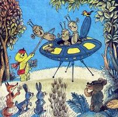 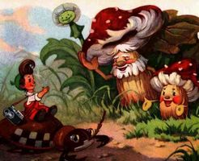
Мурзилки разных поколений: мальчик-репортёр и жёлтый медвежонок с фотоаппаратом.
Но не только яркие герои привлекали к себе многомиллионную читательскую аудиторию. Без хороших сюжетов эти комиксы не смогли бы продержаться на плаву достаточно долго. Авторы с честью выходили из этой ситуации, радуя читателей всё новыми и новыми историями. Благо их успеху способствовала и сама жизнь. Так, в 1960-х у всех на устах были достижения СССР в космонавтике, и авторы «Весёлых картинок» живо откликались на веяния времени, засылая своих персонажей бороздить бескрайние просторы Вселенной, встречаться с представителями иных миров.
Конкурентом Весёлых человечков выступал Мурзилка — герой одноимённого журнала. Как и Весёлые человечки, Мурзилка попадал во всевозможные переделки, встречался с инопланетянами, помогал детям, боролся со злыми силами — хулиганами, бандитами и колдуньей Ябедой-Корябедой. Мурзилке в его приключениях помогали малыши, добрые звери и самый верный друг — птичка Чирик.
Изредка в стране издавались комиксы по мотивам классических фантастических произведений. В 1983 году после успеха мультфильма «Тайна третьей планеты» вышел комикс по повести Кира Булычёва «Приключения Алисы», а в 1987 году — «Похищение чародея. Повесть-комикс» и «Выбор». Писатель продолжал вдохновлять авторов рисованных историй и в последующие годы. В 1993-м вышла книга-комикс «Андрей Брюс — агент космофлота», а в 1995-м в журнале Blaster опубликован комикс по повести «Перевал».
Не меньшую известность, чем Херлуф Бидструп, в СССР приобрёл французский карикатурист Жан Эффель. Его серии «Эвелина», «Простачок», «Чудный ребёнок», «Ангелочек» — одностраничные комиксы, в которых художник с помощью нескольких кадров рассказывал какую-нибудь поучительную историю, делился наблюдением или просто высмеивал современное общество. Самой известной работой Эффеля был сборник «Сотворение мира». С присущей ему иронией художник рассказывает о создании вселенной, начиная с божественной задумки и заканчивая изгнанием Адама и Евы из рая. Среди героев «Сотворения» — ангелочки, помогающие старичку в белой хламиде творить этот безумный мир, всячески гадящий им Сатана и Адам с Евой, ставшие невольными участниками божественного эксперимента.
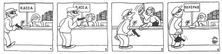
Ох, нелёгкая это работа — создавать целую вселенную!
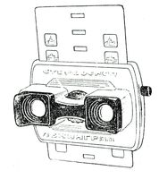
Стереокартинки — словно слоёные пироги.
Истории в картинках выходили в Советском Союзе не только на бумаге. Задолго до появления первых домашних кинотеатров многие дети по вечерам смотрели диафильмы. Их идея проста — на обычной киноплёнке в несколько десятков кадров умещалась целая история. Под каждым кадром-рисунком располагался текст с диалогами и описанием действий героев. Плёнки смотрели через специальный проектор, называемый в народе фильмоскопом. Изображение проецировалось на гладкую поверхность (обычная белая стена, дверь или простыня). Ребёнок смотрел на картинку, читал под ней текст, а после перемещал плёнку до следующего кадра. Иногда вместе с диафильмами продавали виниловые пластинки, на которых профессиональные актёры или дикторы наговаривали текст. В этом случае можно слушать текст и наслаждаться зрелищем статичных картинок. Наиболее популярными были сказки русских и зарубежных авторов, а также «экранизации» популярных мультфильмов вроде «Ну, погоди!».
Ещё один способ увидеть истории в картинках был у обладателей стереоскопов. Это простой механизм с двумя линзами-окулярами позволял просматривать стереоскопические изображения — парные кадры, закреплённые на небольшом листе картона. Чтобы просмотреть следующий кадр, достаточно было передвинуть картонный лист либо сменить его на другой.
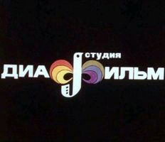
Родом из детства.
Настоящий бум историй в картинках начался уже под занавес советской эпохи, на рубеже 90-х годов. В эти годы комиксы выходили не только на страничках известных и не очень журналов, но и отдельными изданиями.
Стоит отметить несколько новых журналов, где печатались комиксы. Таким было издание «Трамвай», где главными героями рисованных историй выступали сыщик Бертрам Вайс и его собака- ищейка Компостер. Как и в «Науке и жизни», комикс предлагал читателям погрузиться в мир детектива и посоревноваться с Вайсом. Другим журналом, который активно печатал комиксы, был «Экран — детям». Здесь читатели могли познакомиться с героями европейских комиксов, такими как Тинтин и его верная собачка Снежок.
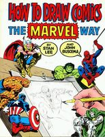 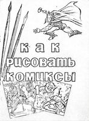
Зарубежное и отечественное издание легендарной книги. Почувствуйте разницу.
Истинным подарком для любителей историй в картинках был выход в 1991 году в Новосибирске книги «Как рисовать комиксы» под редакцией Стэна Ли и Джона Бускемы. В доступной и наглядной форме авторам удалось представить процесс создания рисованной истории: от первоначальной задумки до окончательного графического оформления, выполненного тушью, наполненного многочисленными деталями и осуществлённого в стилистике героических американских комиксов. Издание стало знаковым, оказав сильнейшее влияние на становление комикса постсоветской эпохи.
Одновременно в нашей стране были впервые осуществлены перепечатки героических комиксов. В 1989 и 1990 годах изданы два выпуска историй о Флэше Гордоне, Рипе Кирби, Конане-завоевателе, в 1991-м увидели свет приключения Бэтмена.
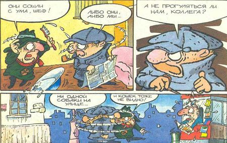
Их служба и опасна, и трудна...
Конец 80-х ознаменовался небывалым всплеском интереса советских людей к западной массовой культуре, разнообразные представители которой всё активнее пробивали дорогу в СССР. Вслед за полномасштабным вторжением видеокассет с голливудскими фильмами стали появляться и комиксы по мотивам известных киноблокбастеров, такие, например, как «Робокоп».
Отечественные издания выходили как в Москве, так и на периферии. После выхода сборника разножанровых историй под названием «Вова» был выпущен двухтомник «Приключения капитана Донки», повествующий о храбром герое, которому удалось выйти из всех передряг живым и невредимым. За «Капитаном» последовали «Приключения Колобков» (сейчас их называют Братьями-пилотами).
Стиль рисования этих комиксов был далёк от марвеловского: он имеет больше общих черт с «мультяшками». Отчасти причина кроется в том, что многие художники пришли в эту сферу именно из анимации. Стилистика рисованного мультика была оптимальна для кратких, часто юмористических историй, которые и назывались в СССР комиксами.
В СССР до 1980-х годов термин «комикс» отсутствовал в широком обороте. Комиксы называли «рисованными рассказами» или «изорассказами».
Однако развивалась и «реалистическая концепция» комикса, когда художник стремится показать историю, где действуют реальные люди, а не условные человечки или зверьки. Так, в годы перестройки вышел комикс о Великой Октябрьской революции, в 1990 году — история в картинках о восстании декабристов «1825. Заговор». Готовилась серия комиксов «Века и люди». А в 1991-м на прилавках появился даже эпический комикс по книге Фридриха Энгельса «Происхождение семьи, частной собственности и государства»!
Вообще стилистика комиксов конца 1980-х и начала 1990-х — это чистый хаос: каждый рисовал как хотел и что хотел. Так, на фоне самодельной «Алёнки» и чуть более мастеровитого «Космодрома» выделялся профессионально сделанный журнал «Муха», который начал выходить в 1991-м. Разнобой был не только в стилистике, но и в сценариях комиксов того периода. Здесь можно было видеть боевики, в которых мужественные герои сражались со злодеями как земного, так и инопланетного происхождения. Были комиксы ужасов, навеянные американскими фильмами соответствующего содержания, юмористические истории самого различного пошиба. Одним из новых веяний стали истории о Древней Руси — ещё одно «зарождение» жанра славянского фэнтези, бывшего тогда в диковинку.
Практически все советские рисованные истории тех лет имели общую черту — основой служили американские и европейские комиксы, сюжеты и герои которых были автоматически пересажены на нашу почву. На тот момент этот приём успеха у публики не снискал, поэтому подобные издания продержались на рынке всего несколько выпусков, оставив тем не менее небольшой, но заметный след в развитии отечественной комикс-индустрии.
В общем, начало 1990-х годов показало, что в нашей стране комиксы будут жить. Возможно, они не обретут того огромного числа читателей, как за рубежом, но свой сегмент рынка печатной продукции займут прочно, обзаведясь устойчивой группой поклонников. События последующих лет это подтвердили...
В постсоветское время началось триумфальное шествие комикса по России. Нельзя сказать, что истории в картинках завоевали среди нашей публики ту же популярность, что и на Западе, но ассортимент их вырос на порядок.
Можно выделить несколько тенденций в отечественной комикс-индустрии новейшего времени. В первую очередь, постепенно померкла слава героев советской эпохи. Они не устояли под натиском новых кумиров и сдали свои позиции. Весёлые человечки и Мурзилка не исчезли, но тиражи детских журналов, где печатались эти комиксы, значительно снизились. Ряд попыток по изданию европейских комиксов так и не нашли широкого отклика у публики.
Одновременно небольшие комиксы стали появляться на страницах непрофильных изданий. В детских журналах «Пионер», «А почему?», «Классный журнал» печатались истории для детей, в игровых — «Навигатор игрового мира», «Великий Дракон» и «MegaGame» — посвящённые компьютерным развлечениям.
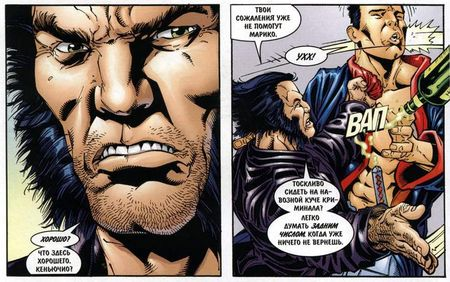
У Росомахи со злодеями разговор короткий.
В 90-е годы многие издательства пытались выпускать комиксы местных авторов-энтузиастов, но дальше пары-тройки выпусков дело не шло — слишком узкой была прослойка ценителей, да и качество продукции оставляло желать лучшего.
Одновременно с попытками создать новых русских героев всё больше появляется переводов зарубежных комиксов. Так, в 1994 году издаётся серия Elf Quest о приключениях племени остроухих воинов, печатаются комиксы по мотивам классических произведений: «Хоббит», «Шерлок Холмс», «Затерянный мир».
Нишу «для самых маленьких» прочно заняли комиксы с диснеевскими героями. Издательство «Эгмонт России Лтд» публикует серии историй «Микки-Маус», «Утиные истории», «Микки-детектив». Конкуренцию им могут составить разве что комиксы о Черепашках-ниндзя, которые неустанно спасают Землю от суперзлодея Шредера и его прихвостней.
Всё больше появляется комиксов по мотивам фильмов и мультфильмов. В 1997 году выходит серия «Звёздные войны: Новая надежда», публикуются истории в картинках о похождениях именитого археолога Индианы Джонса. Неугомонные Том и Джерри также перебираются на страницы печатных изданий. Время от времени издаются сборники с историями о псе Скуби-Ду, семейки Флинстоунов, Друпи.
С начала нового тысячелетия комиксы в России выходят уже на постоянной основе. Ведущее место занимают супергероические серии компании Marvel о Человеке-пауке, Фантастической четвёрке, Росомахе и других известных персонажах. На рынке появляются переводы графических романов «Песочный человек», «Город грехов», «Особо опасен», «Хранители», которые составляют золотой фонд зарубежного комикса. Подул и ветер с Востока — на российском рынке появляется манга, которая обретает огромную популярность у молодёжи.
С 2002 года в Москве проходит фестиваль «КомМиссия», на котором комиксисты демонстрируют свои наработки на выставках, проводят конкурсы и строят планы по созданию отечественных комиксов. Правда, лишь малая часть проектов пока доходит до читателей.
Но подвижки есть — зачастую в весьма неожиданной форме. Так, в 2003 году издана трёхтомная серия боевиков Игоря Алимова «Пластилиновая жизнь» в жанре «двуллера» (текст плюс картинки, стилизованные под комикс). А в новом романе известного отечественного фантаста Вадима Панова «Последний адмирал Заграты» текст дополнен рисованными страницами — и это не просто иллюстрации, а настоящий комикс, развивающий сюжет.
Ещё одним феноменом современной индустрии комиксов в России становится её «сетевое» воплощение. Команды энтузиастов, не дожидаясь официальных релизов, собственными силами переводят зарубежные комиксы, а потом выкладывают их в Сети на всеобщее обозрение, способствуя развитию конкуренции на этом рынке.
Так что, похоже, комикс в Россию пришёл всерьёз и надолго.
Комиксы из Японии появились в России не так давно. Но сейчас их издают все кому не лень: «Сакура-пресс», «Фабрика комиксов», «Палма Пресс», «Comix-ART» и многие другие. Российские издатели занимаются не только переводом и продвижением зарубежных проектов. В первой половине 2011 года «Фабрика комиксов» выпустила уже два номера альманаха русской манги «NMG».
И манга в России пока побеждает западные комиксы. Возможно, «виной» сам формат. Манга напоминает маленькие книжечки, в то время как тонкие «тетрадки» супергероических историй выглядят чужеродно. Другая причина может крыться в том, что истории о Человеке- пауке, Росомахе и прочих до сих пор воспринимаются как чтиво для детей. В то время как манга уже перестала считаться исключительно подростковым развлечением. Не последнюю роль играет и то, что манга тесно связана с аниме, которое завоевало в нашей стране немало поклонников самого разного возраста.
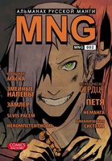